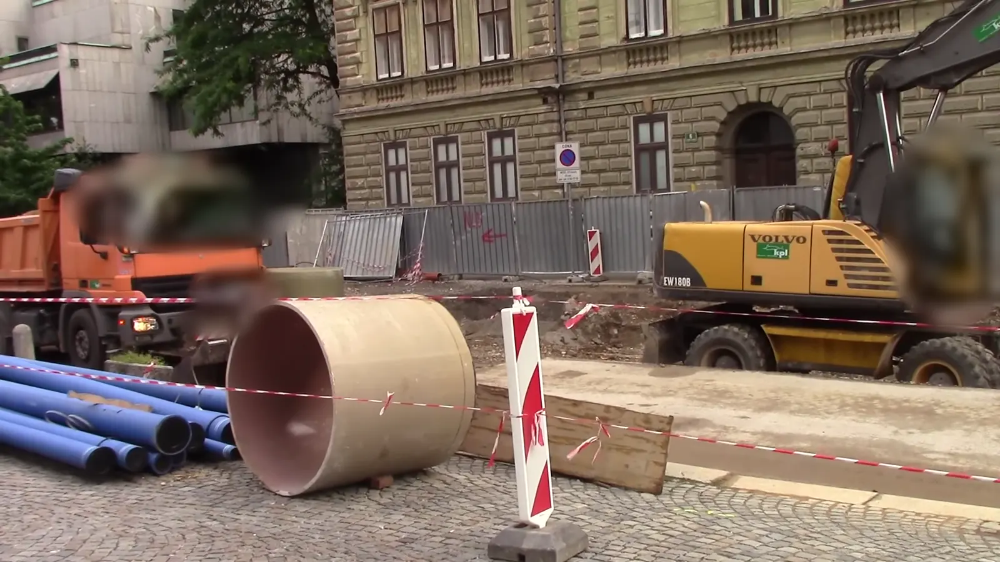

Площадка работает ровно: 41 рейс за смену, простой 18 %, на 6 пунктов меньше, чем вчера. Два номера ждут вашего подтверждения.
Площадка работает ровно: 41 рейс за смену, простой 18 %, на 6 пунктов меньше, чем вчера. Два номера ждут вашего подтверждения.
Следующий — 10:41, камера 2